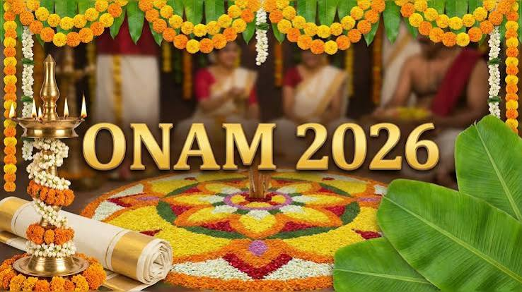

Onam is the grand annual harvest and cultural festival of Kerala, celebrated by Malayali communities across the globe The ten-day festival takes place during the Malayalam month of Chingam, which falls in August or September. It marks the Malayalam New Year and celebrates a successful agricultural harvest.which falls in August or September. It marks the Malayalam New Year and celebrates a successful agricultural harvest.